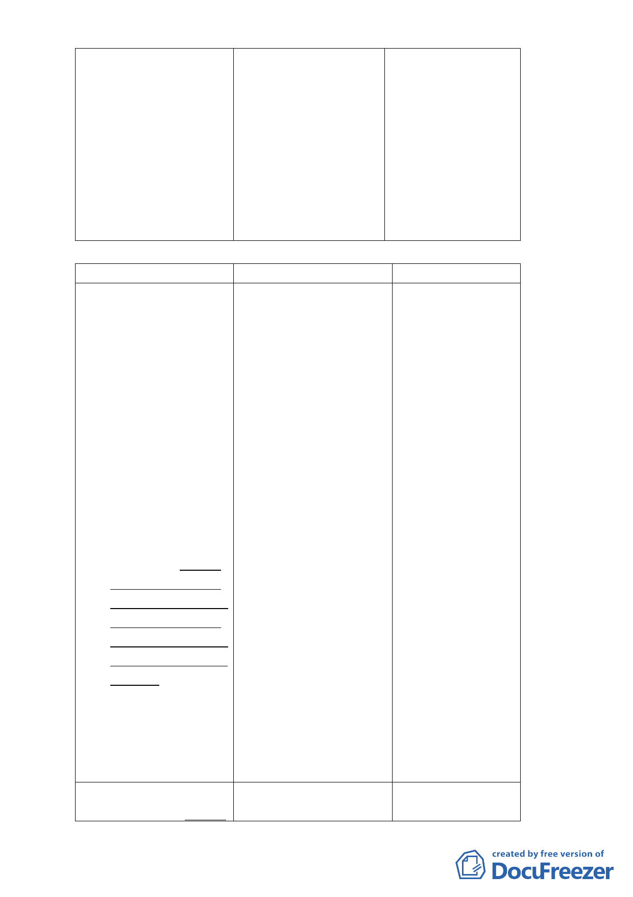

點之新違建，不論地
區一律查報拆除，另
53.1.1以後至
83.12.31以前已存在
之既存違建拍照列
管，列入分期分類處
理。經拆除查報之違
建基地，除須將地形
恢復原狀外且應予綠
化處理。
（二）修訂細計畫
修訂內容
原計畫內容
修訂理由
附件一：臺北市文山區指 附件一：臺北市文山區指 考量貓空地區多數
南里、老泉里部
南里、老泉里部 店家有土地權屬複
分保護區可申請
分保護區可申請 雜、資金不足之問
開發許可範圍開
開發許可範圍開 題，辦理建築設
發許可處理原則
發許可處理原則 計、擬定水土保持
壹、總則：
壹、總則：
計畫、水源取得計
五、既有合法建築物不符 五、既有合法建築物不符 畫及地質鑽探等必
前款規定時，仍得繼
前款規定時，仍得 要程序需一定辦理
續為原有合法之使
繼續為原有合法之 時間，且3年受理期
用，但不得申請變更
使用，但不得申請 間適逢貓空纜車停
為營業使用。本計畫
變更為營業使用。 駛1年半（97年10月
公告實施後之既有
本計畫公告實施後 至99 年3月），影
不符本計畫土地使
之既有不符本計畫 響店家生意及申請
用分區管制規定之
土地使用分區管制 意願，故依原計畫
建築，應於100年8
規定之建築，應於 規定「完成申請建
月22日前提出開發
公告實施後三年內 築核准」期限修訂
許可申請，都市設計
完成申請建築核 為「受理開發許可
審議核備後半年內
准，核准後二年內 期限」（100年8月
申請建造執照，建造
建築完成；未於期 22日），並管控取
執照取得後2年內建
限內依規定完成建 得建造執照及開發
築完成。未於期限內
造執照申請並獲核 建築期限，以符實
依規定完成建造執
准，將依相關法令 需。
照申請並獲核准，將
予以強制取締，並
依相關法令予以強
不得再提出申請供
制取締，並不得再提
營業使用。
出申請供營業使用。
貳、申請開發基地條件： 貳、申請開發基地條件： 配合本府組織編制
五、基地位於本府工務局 五、基地位於本府產業發 調整，產業發展局
-4-